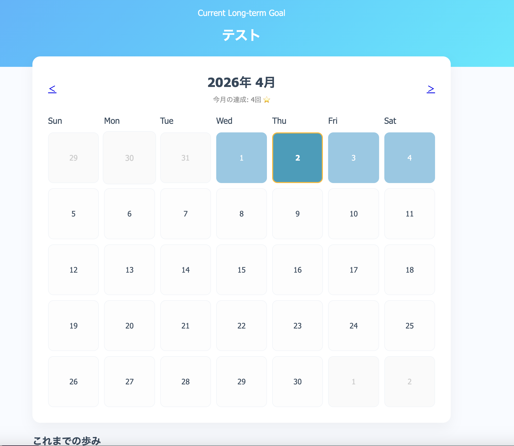

One Step（未来の自分への行動管理アプリ）

開発環境
Ruby / Ruby on Rails / PostgreSQL / GitHub / Render / RSpec / Visual Studio Code
-
概要
制作時間 100時間 URL https://one-step-app.onrender.com -
動作テスト
テスト用アカウント
mail test_user@example.com PASS 123456
OUTLINEアプリケーションの概要
「未来の理想の自分」から逆算し、今日やるべきアクションをカレンダー形式で管理するアプリです。
開発で工夫したこと
RSpecを用いた自動テストを導入し、継続的な開発ができる環境を整えました。 UI変更時にテストが不安定になる課題に対し、JavaScriptでの待機処理を最適化することで克服。 そのデバッグ過程で、特定の条件下での描画エラーを早期に発見・修正するなど、ユーザー体験を損なわない品質管理に努めました。
-
開発に至った経緯
自身のスキルアップや目標達成を目指す中で、日々の小さな積み重ねを継続することの難しさを実感していました。
多くのタスク管理アプリは「今日すべきこと」の消化には向いていますが、「未来の理想の姿」と「今のアクション」がどう繋がっているかを実感しにくいという課題があると感じました。
そこで、長期的なビジョンから逆算して日々の行動を管理し、自分の成長をカレンダーで可視化できるセルフマネジメントアプリを作成したいと考え、開発に至りました。
-
開発で工夫したこと
1つ目は、RSpecによる徹底した自動テストの導入です。特にカレンダー機能や投稿モーダルの挙動など、ユーザー体験に直結する部分の品質管理を重視しました。
2つ目は、デバッグを通じたUIの改善です。システムテスト実行時に、JavaScriptの読み込みタイミングによってテストが失敗する事象が発生しました。これを解決するために待機処理を最適化した結果、保存失敗時のエラーハンドリングの不備も発見・修正でき、より堅牢なシステムを構築できました。
-
今後実装したいと思っていること
現在は行動の記録がメインですが、今後は蓄積されたデータをグラフ化して可視化する「ダッシュボード機能」を実装したいと考えています。
また、睡眠や食事、運動といったライフスタイル全般のログも統合することで、心身のコンディションと目標達成率の相関を分析できるような、より包括的なセルフマネジメントツールへとアップデートしていく予定です。